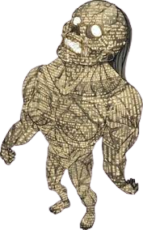
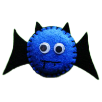

HISTÓRIA DO MASCOTE ANDROID
Provavelmente você sabe que o sistema operacional Android, mantido pelo Google é um dos mais utilizados para dispositivos móveis em todo o mundo. Mas talvez você não saiba que o seu simpático mascote tem um nome e uma história muito curiosa? Pois acompanhe o artigo para aprender muita coisa sobre esse robozinho.
A PRIMEIRA VERSÃO
A primeira tentativa de criar um mascote surgiu em 2007 e veio de um desenvolvedor chamado Dan Morrill ele conta que abriu o Inkscape (software livre para vetorização de imagens) e criou sua própria versão robô. O objetivo era apenas personificar o sistema apenas para a sua equipe, não existia nenhum aempresa para a criação de um mascote.
 